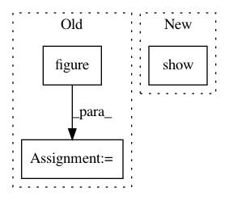

d795f811eb13a20e18aa30c435cef0ad99e830ea,examples/plot_unet_tutorial.py,,,#,127
Before Change
prediction = unwrap(prediction, as_numpy=True, to_cpu=True)
fig = pylab.figure()
ax = fig.add_subplot(1, 3, 1)
ax.imshow(image[0,0,...])
ax.set_title("raw data")
ax = fig.add_subplot(1, 3, 2)
ax.imshow(target[0,...])
ax.set_title("raw data")
ax = fig.add_subplot(1, 3, 3)
ax.imshow(prediction[0,...])
ax.set_title("raw data")
fig.tight_layout()
After Change
ax.set_title("ground truth")
break
fig.tight_layout()
plt.show()
////////////////////////////////////////////////////////////////////////////////////////////////////////////////////////////////////////////////////////////
// Simple UNet
In pattern: SUPERPATTERN
Frequency: 3
Non-data size: 3
Instances
Project Name: inferno-pytorch/inferno
Commit Name: d795f811eb13a20e18aa30c435cef0ad99e830ea
Time: 2018-08-10
Author: thorsten.beier@iwr.uni-heidelberg.de
File Name: examples/plot_unet_tutorial.py
Class Name:
Method Name:
Project Name: bokeh/bokeh
Commit Name: 15f157d5942b1b118c2679a9345ad318caa98cba
Time: 2017-03-27
Author: jsignell@gmail.com
File Name: examples/plotting/file/jitter.py
Class Name:
Method Name:
Project Name: scipy-lectures/scipy-lecture-notes
Commit Name: 6d87b5fa03420a908fbf7e72868307dd6bc3223f
Time: 2016-09-15
Author: gael.varoquaux@normalesup.org
File Name: intro/matplotlib/examples/plot_grid.py
Class Name:
Method Name: